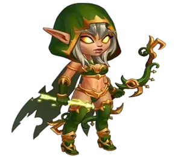
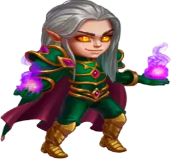
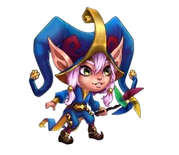
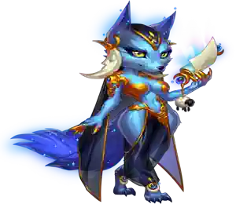

Como Derrotar Aidan

Counters de Aidan:
- Morrigan: é um contra perfeito para Aidan, pois bloqueia sua habilidade de ressurreição, especialmente com Kayla. Além disso, cada vez que Aidan tenta uma ressurreição, Morrigan ganha essência de alma, o que alimenta suas habilidades, dando-lhe uma vantagem na batalha.
- Oya: Oya puxa inimigos com menos vida para a linha de frente. Mesmo que Aidan não seja o primeiro alvo, ele pode ser o próximo, impedindo-o de curar seus aliados.
- Polaris: Counter do Aidan de forma eficaz ao interromper seus ciclos de escudo e queimadura com atordoamentos de longa duração, impedindo-o de proteger aliados e manter o dano contínuo.
Como Derrotar Alvanor

Counters de Alvanor:
- Cornelius: A primeira habilidade de Cornelius causa dano físico alto proporcional à inteligência dos inimigos, causando dano significativo a Alvanor.
- Celeste: Celeste pode bloquear a cura de Alvanor, mas sua quarta habilidade será enfraquecida contra a quarta habilidade de Alvanor.
- Phobos: Phobos ataca inimigos com o maior ataque mágico, causando dano substancial e transferindo a energia de Alvanor para Phobos.
- Rufus: Rufus é imortal contra dano mágico, protegendo a si mesmo e seus aliados de Alvanor.
Como Derrotar Amira

Counters de Amira:
- Cornelius: Cornelius mira em heróis com alta inteligência, como Amira, e pode eliminá-la com um único golpe.
- Sebastian: Sebastian fornece dano puro através de golpes críticos, mesmo quando Amira bloqueia os críticos. Emparelhá-lo com heróis como Keira ou Daredevil maximiza o dano.
- Lilith: Amira só pode reduzir 5% da vida máxima de Lilith em vez de 50%, porque o atributo de vida máxima de Lilith é mais alto.
- Xe'Sha: O bloqueio mágico de Amira é limitado a aliados com dano mágico abaixo de 45.299. Os atributos mais altos de Xe'Sha permitem que ela ultrapasse isso.
- Phobos: Embora Amira bloqueie seu dano, Phobos pode roubar a energia dela, atrasando seu ultimate.
- Fafnir, Keira, Cornelius, Corvus, Morrigan (Caminho da Eternidade): Keira elimina Amira rapidamente antes que ela possa usar sua montaria dourada. Fafnir ou Cornelius podem fornecer proteção para manter Keira viva.
Como Derrotar Andvari

Counters de Andvari:
- Astrid: Astrid causa dano significativo a Andvari e o atordoa focando seus ataques.
- Satori: Quando Andvari protege o aliado com a menor armadura, esse aliado ganha energia extra e pode ser eliminado, deixando Andvari com um aliado a menos.
- Lars: Lars empurra Andvari para trás, fazendo com que os aliados de Andvari percam sua proteção contra controle de multidão por um período.
- Chabba: Chabba pode engolir Andvari se ele estiver posicionado como o tanque, permitindo que Karkh elimine os aliados desprotegidos.
Como Derrotar Arachne

Counters de Arachne:
- Sebastian: O escudo de Sebastian pode defender sua equipe dos atordoamentos de Arachne.
- Nebula: A habilidade Serenidade de Nebula pode purificar os efeitos negativos de Arachne.
- Celeste: Celeste pode anular o roubo de vida de 30% de Arachne e também remover efeitos prejudiciais dos aliados.
- Julius: O escudo de Julius remove os debuffs de Arachne quando quebrado, o que pode funcionar bem aqui.
- Galahad: Galahad pode remover os atordoamentos de Arachne de si mesmo usando sua habilidade de carga.
Como Derrotar Artemis

Counters de Artemis:
- Amira: A habilidade Comércio Justo de Amira pode reduzir o dano de Artemis, transformando golpes críticos em falhas críticas e, assim, causando menos dano.
- Ziri: Ziri atrai a atenção de Artemis, absorvendo dano físico e refletindo-o de volta.
- Helios: Helios contra-ataca o dano físico com esferas protetoras e revida sempre que um companheiro de equipe sofre um golpe crítico.
- Jorgen: Jorgen pode bloquear o ganho de energia na equipe de Artemis, especialmente quando emparelhado com Machadinha, que traz seus defensores da linha de frente para perto.
- Phobos: Phobos mira no maior atacante mágico, que na maioria das vezes será Artemis em suas equipes.
Nota:
As equipes de Artemis podem ser derrotadas por equipes de escudo, particularmente com a combinação de JJI Julius, Juiz e Isaac, juntamente com Amira como o quinto membro da equipe.
Como Derrotar Astaroth

Counters de Astaroth:
- Morrigan: Morrigan impede que Astaroth ressuscite e convoca um esqueleto em seu lugar quando ele morre.
- Celeste: Celeste pode bloquear a saúde extra obtida pela ressurreição de Astaroth ou de seus aliados ressuscitados.
Como Derrotar Astrid e Lucas

Counters de Astrid:
- Iris: Iris pode rapidamente eliminar Astrid e Lucas com sua habilidade Fogo Interno, especialmente quando eles estão marcados pelos Marcadores do Rastreador.
Como Derrotar Aurora

Counters de Aurora:
- Chabba: Chabba pode devorar Aurora, interrompendo sua habilidade de esquivar e proteger sua equipe com escudos mágicos.
- Corvus: Corvus pode colocar seu altar para punir Aurora por seu dano em área e habilidades de escudo mágico.
- Rufus: Rufus é invencível contra o dano mágico de Aurora, graças à sua habilidade passiva que permite sobreviver a qualquer ataque mágico fatal. Como as habilidades de Aurora causam dano mágico, ela não tem poder suficiente para derrotar Rufus efetivamente.
Como Derrotar Dilúvio

Counters de Dilúvio:
- Corvus: Quando Dilúvio avança para o meio da equipe inimiga, ela causa dano em área, e o Altar de Corvus redireciona todo o dano de volta para Dilúvio.
Como Derrotar Celeste

Counters de Celeste:
- Cornelius: Cornelius pode derrotar Celeste em um único golpe ao atacar sua alta inteligência, neutralizando sua capacidade de curar e causar dano com magia.
Como Derrotar Chabba

Counters de Chabba:
- Celeste: Quando Chabba se cura ao devorar inimigos, Celeste pode bloquear a regeneração e convertê-la em dano.
- Dante: Dante reduz o atributo de Força de Chabba, diminuindo sua saúde e, consequentemente, sua armadura.
Como Derrotar Machadinha

Counters de Machadinha:
- Dorian: Dorian aumenta o vampirismo dos aliados próximos quando Machadinha os puxa, permitindo que se curem e sobrevivam por mais tempo.
- Andvari: protege aliados de deslocamentos, impedindo que Machadinha os puxe para a linha de frente com seu machado.
Como Derrotar Cornelius

Counters de Cornelius:
- Aidan: Aidan cria um escudo no aliado com a menor saúde, protegendo-o de dano físico e mágico. A força do escudo escala com a saúde máxima dos aliados.
- Isaac: Isaac gera um escudo que bloqueia tanto dano físico quanto mágico até ser quebrado. Como o ultimate de Cornelius é um golpe de dano único, é completamente absorvido pelo escudo de Isaac, anulando a ameaça.
- Fafnir: Fafnir forja um escudo para aliados com menos de 25% de saúde, absorvendo todos os tipos de dano. Isso torna impossível para Cornelius derrotar os aliados de Fafnir com um único golpe.
Como Derrotar Corvus

Counters de Corvus:
- Dante: Dante reduz os principais atributos dos inimigos, como força ou agilidade. Isso enfraquece a habilidade do Altar de Corvus, que depende da saúde máxima do inimigo. Ao reduzir a força, Dante também diminui a saúde de Corvus, tornando seu altar menos eficaz.
- Sem Rosto: Sem Rosto pode empurrar Corvus para trás, interrompendo a ativação de seu altar.
- Dorian: Dorian apoia heróis de vidro, mantendo-os vivos por mais tempo contra o altar de Corvus através do vampirismo.
Como Derrotar Dante

Counters de Dante:
- Dorian: Dorian aumenta o vampirismo dos aliados empurrados para a retaguarda por Dante, ajudando-os a recuperar a saúde rapidamente.
- Iris: Quando Dante aplica os debuffs do Arco Espectral nos aliados de Iris, ele é penalizado, tendo seu dano físico reduzido, o que diminui a eficácia de suas habilidades, incluindo o Arco Espectral, enquanto também recebe pesado dano mágico de Iris.
- Heidi: Heidi é um dos melhores Counters para personagens com alta taxa de esquiva como Dante.
Como Derrotar Daredevil

Counters de Daredevil:
- Helios: A habilidade Retribuição Flamejante de Helios causa dano sempre que aliados recebem golpes críticos, e como Daredevil tem 100% de chance de causar golpes críticos, ela não tem chance contra equipes lideradas por Helios.
- Corvus: O altar de Corvus pode eliminar Daredevil, a menos que ela use o vampirismo de Dorian para se sustentar.
- Oya: Oya pode puxar Daredevil para a linha de frente, removendo-a da proteção de aliados-chave como Dorian.
Nota: Amira não consegue contra-atacar Daredevil com sua habilidade Comércio Justo, porque a habilidade Espreitada Vertiginosa de Daredevil sempre causa dano puro em área, independentemente das chances de golpe crítico.
Como Derrotar Estrela Sombria

Counters de Estrela Sombria:
- Satori: Após a reformulação de Estrela Sombria, ela ganhou a habilidade de aplicar marcas, tornando-se vulnerável às marcas de fogos-fátuos de Satori.
- Soleil: Aplica a Marca do Deus Antigo no inimigo central se Estrela Sombria estiver nessa posição, causando dano sempre que ela usa uma habilidade de controle.
- Oya: Oya pode puxar Estrela Sombria para a linha de frente e eliminá-la rapidamente.
Como Derrotar Dorian

Counters de Dorian:
- Celeste: Celeste pode bloquear a cura, impedindo que Dorian e seus aliados se curem através do vampirismo.
- Cornelius: Cornelius pode eliminar Dorian com um único golpe de monólito.
- Phobos: Phobos pode atordoar e rapidamente derrotar Dorian.
- Jhu: Jhu ataca da retaguarda com dano crítico, deixando Dorian sem chance de sobreviver.
- Jorgen: Jorgen redireciona todo o dano físico para a retaguarda, dificultando a sobrevivência de Dorian.
- Lian: Quando Dorian libera seu enxame de morcegos na retaguarda, os morcegos atingem Lian, e Dorian fica encantado.
Como Derrotar a Electra

Contra-ataques à Electra:
- Astrid & Lucas: Lucas salta para a linha de frente, causando grande dano e atordoando os inimigos por 4 segundos, impedindo Electra de usar sua habilidade suprema.
- Sebastian: Sua maldição reduz a armadura da Electra no início da batalha — como a armadura dela é convertida em uma grande quantidade de vida, isso reduz bastante sua sobrevivência.
- Arachne: Atordoa os inimigos da linha de frente, impedindo que Electra ative sua habilidade suprema para absorver dano.
- Polaris: Aumenta o dano contra inimigos atordoados, ampliando o dano mágico da equipe e punindo as jogadas de linha de frente da Electra.
Como Derrotar Elmir

Counters de Elmir:
- Alvanor: A habilidade Runa da Terra de Alvanor bloqueia o dano dos ataques básicos dos clones de Elmir.
Como Derrotar Sem Rosto

Counters de Sem Rosto:
- Folio: Folio usa a habilidade Cópia de Tinta na frente de seus aliados, e quando Sem Rosto usa sua segunda habilidade, Lançamento Poderoso, ele lança a marca de tinta em vez de mirar no tanque.
- Iris: Iris é imune a debuffs, e se um inimigo aplicar um debuff ou marca aos seus aliados, ela reduz o ataque físico e mágico do inimigo. Quando Sem Rosto usa sua habilidade Relâmpago em Cadeia, que salta entre 3 inimigos e aplica debuffs, ele recebe um debuff ainda mais forte de Iris em troca.
- Sebastian: Sebastian protege os aliados de serem atordoados, tornando-o eficaz contra Sem Rosto.
Como Derrotar Fafnir

Counters de Fafnir:
- Amira: O Teste de Resistência de Amira drena a energia de Fafnir, já que sua saúde máxima é inferior à de seu alvo.
- Machadinha: Machadinha pode puxar Fafnir para a linha de frente, tornando-o mais vulnerável a ataques.
- Peppy: A combinação de Peppy e Machadinha pode causar dano duplo a Fafnir na linha de frente, graças à habilidade Escudo de Coragem de Peppy, que inflige dano mágico toda vez que o aliado protegido sofre dano.
Como Derrotar Folio

Counters de Folio:
- Soleil: Folio é um herói com habilidades de controle posicionado na linha do meio. Soleil aplica a Marca do Deus Antigo no inimigo central e aumenta a penalidade se o inimigo usar uma habilidade de controle.
- Cornelius: Cornelius mira no inimigo com a maior inteligência, causando dano físico considerável, deixando Folio sem chance de sobreviver.
- Phobos: Phobos inflige dano no inimigo com o maior ataque mágico, potencialmente Folio, atordoando-o por 6,6 segundos enquanto drena sua energia para se fortalecer.
- Iris: Quando Folio ativa sua passiva Maldição do Conhecimento para drenar inteligência do inimigo com a maior inteligência, ele aplica um debuff. Iris, imune a debuffs, efetivamente neutraliza Folio, reduzindo drasticamente seu ataque mágico e causando dano adicional.
Como Derrotar Raposa

Counters de Raposa:
- Ziri: Raposa pode eliminar um tanque com um único ataque ao usar seu ultimate, mas Ziri é o tanque com a maior armadura do jogo e pode sobreviver ao dano de Raposa.
- Sebastian: Sebastian protege os aliados de maldições e efeitos de controle, impedindo Raposa de atordoar os tanques da linha de frente, que são os principais alvos de Raposa.
Como Derrotar Galahad

Counters de Galahad:
- Jorgen: Jorgen pode bloquear o ganho de energia de Galahad, impedindo-o de usar seu ultimate de forma eficaz.
- Celeste: Celeste pode bloquear a habilidade passiva de vampirismo de Galahad.
Como Derrotar Ginger

Counters de Ginger:
- Lian: Toda vez que Ginger atinge Lian, especialmente com suas habilidades de dano em área, ela será encantada e parará de causar dano.
- Kayla: Kayla salta para o meio da equipe inimiga, causando dano puro. Como Ginger é uma atiradora na retaguarda com baixa defesa, ela geralmente não sobrevive.
- Luther: Luther salta para o meio da equipe inimiga, balançando seu martelo e causando dano significativo. Sem suporte forte, Ginger pode não sobreviver ao dano explosivo.
- Corvus: O Altar de Corvus causa dano pesado a Ginger quando ela usa dano em área, mas isso só funciona se Ginger não tiver o vampirismo de Dorian ativo.
- Alvanor: Alvanor lança a Runa da Terra nos aliados, protegendo-os do dano de Ginger.
Como Derrotar o Guus

Contra-ataques ao Guus:
- Helios: Contra-ataca os aliados do Guus que causam dano crítico, punindo seus golpes críticos.
- Amira: Transforma os golpes críticos inimigos em falhas, anulando os bônus críticos do Guus.
- Polaris: Atordoa constantemente, impedindo o Guus de usar habilidades de cura. Funciona melhor em combos de atordoamento como Arachne ou Juiz.
- Celeste: Bloqueia as habilidades de cura do Guus e limita sua sustentação.
Como Derrotar Heidi

Counters de Heidi:
- Cornelius: Cornelius ataca Heidi com o Monólito, potencialmente eliminando-o com um único golpe.
- Phobos: Phobos ataca Heidi, atordoando-o e causando grande dano mágico.
- Folio: Folio pode roubar grande parte da inteligência de Heidi, impedindo-o de causar dano elevado com toxinas.
- Iris: Iris não pode proteger aliados das toxinas de Heidi, mas pode causar dano mágico significativo a Heidi acumulando almas.
- Corvus: Heidi pode acumular até 10 toxinas em cada inimigo para causar dano, mas sofrerá dano puro do Altar de Corvus para cada instância de dano por toxina.
Como Derrotar Helios

Counters de Helios:
- Phobos: Phobos ataca Helios, atordoando-o e causando grande dano mágico.
- Folio: Folio pode roubar grande parte da inteligência de Helios, impedindo-o de contrar ataques críticos e proteger aliados do dano físico.
- Rufus: Rufus protege aliados do dano mágico ao absorver os ataques de Helios.
- Aurora: A quarta habilidade de Aurora pode absorver até 80% do dano mágico recebido.
Como Derrotar Iris

Counters de Iris:
- Octavia: Octavia é a principal contrariedade de Iris, eliminando-a rapidamente ao refletir o dano do mascote de Iris, Bitey, usando sua habilidade de espelho.
- Corvus: O Altar de Corvus causa grande dano a Iris quando ela usa Bitey na batalha, punindo-a por seu dano mágico em área.
- Amira: Amira bloqueia o dano mágico de Iris, limitando sua eficácia.
- Lian: As habilidades de charme de Lian podem controlar Iris durante toda a luta.
- Aurora: Aurora absorve o dano de Iris, protegendo a equipe.
Como Derrotar Isaac

Counters de Isaac:
- Kayla: Kayla salta para o meio da equipe inimiga, causando dano puro elevado, o que o escudo de Isaac não consegue suportar.
- Soleil: Soleil aplica a Marca do Deus Antigo no inimigo central, Isaac, e quando Isaac usa sua habilidade de controle violeta para empurrar os inimigos, ele sofrerá dano extra.
- Oya: Isaac tem saúde moderada, tornando-o o segundo alvo de Oya, e ele não conseguirá resistir ao ataque dela.
Como Derrotar Ishmael

Counters de Ishmael:
- Astrid e Lucas: O mascote de Astrid, Lucas, atordoa Ishmael, impedindo-o de causar dano e regenerar saúde enquanto está em sua forma demoníaca, permitindo que ele seja rapidamente derrotado.
- Helios: Helios retalia contra Ishmael com suas esferas explosivas na linha de frente, causando dano significativo com base em ataques críticos.
- Celeste: Celeste pode converter a cura de Ishmael em dano mágico, enfraquecendo-o durante a batalha.
- Ziri: Ziri é um tanque com alta armadura que pode atordoar e refletir dano a Ishmael, mantendo-o na linha de frente enquanto os aliados atacam.
Como Derrotar Jet

Counters de Jet:
- Helios: Helios contraria dano crítico, e todos os aliados de Jet com chance crítica recebem dano logo no início da batalha.
- Amira: Amira transforma o dano crítico dos aliados de Jet em falhas críticas, causando apenas dano não-crítico.
- Phobos: Phobos ataca o inimigo com o maior dano mágico, e como apenas heróis de dano físico causam golpes críticos, Jet será o único mago no time e o alvo principal de Phobos.
- Iris: Jet aplica um debuff no tanque inimigo, reduzindo a armadura, o que permite que Iris puna Jet causando dano mágico significativo e reduzindo seu ataque mágico, além de diminuir a chance crítica dos aliados de Jet.
- Celeste: Celeste pode limpar o debuff de redução de armadura que Jet aplica ao tanque e curá-lo. Além disso, ela impede que Jet cure seus aliados.
- Jhu: Jet é um mago que sempre está posicionado na retaguarda, e Jhu sempre mira no inimigo mais distante, dando a Jet nenhuma chance de sobrevivência.
Como Derrotar Jhu

Counters de Jhu:
- Martha: Martha pode absorver o dano de Jhu, atuando como uma resistente tanque de retaguarda e curadora para sua equipe.
- Jorgen: Jorgen bloqueia o ganho de energia de Jhu, impedindo-o de entrar em seu estado de fúria, o que evita que Jhu se torne imortal, ganhe velocidade de ataque e se cure.
- Juiz: O Juiz atordoa Jhu e inimigos próximos, impedindo Jhu de usar sua primeira habilidade e se tornar invencível, permitindo que ele seja eliminado.
Como Derrotar Jorgen

Counters de Jorgen:
- Phobos: Phobos ataca Jorgen, interrompendo sua habilidade de drenar energia e evitando que Jorgen proteja seus aliados.
- Helios: Helios aumenta a regeneração de energia de sua equipe, compensando o debuff de energia de Jorgen e aumentando o ganho de energia de seus aliados.
- Aurora: Aurora pode ignorar as restrições de energia de Jorgen ao ganhar energia absorvendo dano mágico.
- Martha: Martha pode impedir que os aliados de Jorgen ganhem energia mais rapidamente com sua poção de energia e pode curar qualquer debuff que Jorgen causa à sua equipe.
Como Derrotar Juiz

Counters para Juiz:
- Sebastian: Sebastian remove os efeitos negativos de Juiz, como o atordoamento, com seu escudo, protegendo os aliados de ficarem incapacitados.
- Soleil: Em times de Progress, Juiz é tipicamente um herói da linha do meio, tornando-o o principal alvo de Soleil.
- Lilith: Lilith foca em causar dano ao inimigo central enquanto também reduz suas defesas.
- Sem Rosto: Sem Rosto levanta e arremessa o tanque inimigo para o meio da equipe, atordoando e causando dano a Juiz.
Como Derrotar Julius

Counters para Julius:
- Helios: Aumenta o dano crítico e previne debuffs, tornando-o uma excelente escolha de combinação.
- Sebastian: Aumenta o dano crítico, reduz a armadura do tanque inimigo e previne debuffs, tornando-o uma excelente escolha de combinação.
- Helios: Helios, com sua habilidade de contrabalançar acertos críticos, pode causar dano significativo a Julius.
- Qing Mao: Qing Mao pode reduzir a armadura de Julius e causar dano pesado, especialmente quando equipado com um talismã de chance de acerto crítico.
- Daredevil + Elmir: Herói de alta crítica que pode desgastar rapidamente Julius. Os clones de Elmir e a produção de dano físico podem efetivamente contra-atacar Julius.
Como Derrotar Kai

Contra-Kai:
- Andvari: Andvari impede que seus aliados sejam lançados ao ar, evitando que Kai os arremesse para cima.
Como Derrotar K'arkh

Counters para K'arkh:
- Andvari: Andvari protege os aliados dos efeitos de lançamento ao ar, que são o núcleo das habilidades de K'arkh, anulando seu ultimate.
Como Derrotar Kayla

Counters para Kayla:
- Somna: A Somna é o melhor contra-ataque à Kayla. Quando Kayla pula na equipe inimiga para causar dano em área, a Somna a transforma em uma ovelha, forçando-a a voltar para sua posição inicial com dano mínimo causado e recebendo dano extra no lugar.
- Morrigan: Morrigan bloqueia as tentativas de Aidan de ressuscitar Kayla e ganha poder com cada tentativa de ressurreição, tornando-a uma forte contra-Kayla.
- Dilúvio: Dilúvio pode empurrar Kayla de volta para a linha inimiga no momento exato em que ela salta para o meio da sua equipe durante a batalha.
- Corvus: O Altar de Corvus causa dano puro pesado a Kayla quando ela pula para a sua equipe e realiza seus ataques em área.
Como Derrotar Keira

Counters para Keira:
- Lian: Lian desacelera os ataques rápidos de Keira com seus encantos, impedindo que Keira libere todo o seu potencial de dano.
- Corvus: O Altar de Corvus pode eliminar rapidamente Keira quando seus ataques básicos ricocheteiam entre os inimigos.
- Xe'Sha: Xe'Sha é capaz de derrubar Keira com um único ataque.
- Alvanor: Alvanor ativa o Rune of Earth para proteger os aliados dos ataques básicos de Keira.
Como Derrotar Krista

Counters para Krista:
- Iris:
- Cornelius:
- Phobos:
- Rufus:
- Corvus + Morrigan
Como Derrotar Lara Croft

Counters para Lara Croft:
- Amira:
- Helios:
Como Derrotar Lars

Counters para Lars:
- Andvari:
- Iris:
- Cornelius:
- Phobos:
- Rufus:
- Corvus + Morrigan:
Como Derrotar Lian

Counters para Lian:
- Sebastian: Sebastian pode remover os encantos de Lian e desbloquear seus companheiros de equipe, permitindo que eles lutem livremente.
- Nebula: Nebula limpa os encantos de Lian e usa seus projéteis de energia para atacar e queimar rapidamente a energia de Lian.
- Cornelius: Com seu monólito na habilidade ultimate, Cornelius é capaz de derrubar Lian com um golpe poderoso.
- Phobos: Phobos atordoa Lian por 6,6 segundos com sua ultimate, impedindo-a de encantá-lo, causando dano significativo e impedindo-a de ganhar energia.
Como Derrotar Lilith

Counters para Lilith:
- Isaac: Isaac absorve todo o dano mágico, tornando os ataques de Lilith ineficazes.
- Jhu: Jhu foca na linha de trás onde Lilith frequentemente está posicionada, neutralizando efetivamente seu poder.
- Jorgen: Jorgen redireciona o dano físico para a linha de trás e ajuda a derrubar Lilith mais rapidamente.
Como Derrotar Luther

Counters para Luther:
- Dilúvio: Quando Luther salta para o meio da equipe de Dilúvio, ela usa sua habilidade Tsunami para avançar em direção à equipe inimiga, causando dano e empurrando Luther de volta para sua própria equipe.
- Sem Rosto: Sem Rosto pode reposicionar Luther de volta ao seu local inicial, impedindo-o de distrair a equipe e interromper as táticas inimigas.
Como Derrotar Markus

Counters para Markus:
- Celeste: Celeste é uma excelente contra para curadores.
- Heidi:
- Oya:
Como Derrotar Martha

Counters para Martha:
- Machadinha: Machadinha pode puxar Martha para a frente, expondo-a a danos pesados dos frontliners da sua equipe.
- Keira: As habilidades de Keira derrubam a chaleira de chá de Martha, impedindo-a de curar seus aliados.
- Luther: Luther pode saltar para a equipe inimiga, atordoando Martha e causando dano para enfraquecê-la.
Como Derrotar Maya

Counters para Maya:
- Celeste:
- Phobos:
- Rufus:
Como Derrotar Mojo

Counters para Mojo:
- Celeste:
- Keira:
- Lilith:
- Phobos:
- Rufus:
- Satori:
- Soleil:
Como Derrotar Morrigan

Counters para Morrigan:
- Cornelius: Cornelius pode focar em Morrigan com seu monólito se ela tiver a maior inteligência na equipe, derrubando-a rapidamente.
- Celeste: Celeste transforma a cura de Morrigan em dano mágico, neutralizando efetivamente suas habilidades de cura.
Como Derrotar a Nebula

Como Derrotar Nebula:
- Lilith: Marca o inimigo central com um selo demoníaco que explode, causando dano em área e reduzindo a defesa mágica por 8 segundos.
- Phobos: Mira em qualquer aliado fortalecido pelos bônus da Nebula, até mesmo os físicos. Sua habilidade Paralisia atordoa o inimigo com o maior ataque mágico por 6,6 segundos e reduz o ataque físico e mágico dos inimigos próximos por 12 segundos.
- Lars: Empurra os inimigos para a linha de trás, atrapalhando o posicionamento dos bônus da Nebula e a sinergia da equipe.
Como Derrotar Cogu e Mélio

Counters para Cogu e Mélio:
- Rufus: Cogu e Mélio é um tanque com estatísticas semelhantes a um mago, e Rufus é um tanque invencível contra o dano mágico de Mushy, enquanto também protege os aliados dos ataques mágicos.
- Celeste: Celeste pode bloquear a cura de Cogu e Mélio e convertê-la em dano mágico, tornando-os muito mais fáceis de lidar.
Como Derrotar Octavia

Counters para Octavia:
- Satori: As marcas de Fogo de Raposa de Satori podem mirar em Octavia antes que seus aliados sejam eliminados, reduzindo seu impacto na batalha.
- Heidi: Heidi causa apenas dano puro, impedindo Octavia e seus aliados de ganhar energia ao evitar danos mágicos ou físicos. Isso faz com que Heidi seja altamente eficaz contra equipes que evitam ataques e incluem Octavia.
- Polaris: Consegue atordoar inimigos da linha de trás por até 6 segundos, anulando completamente as habilidades da Octavia e outros heróis de suporte ou dano à distância.
Como Derrotar Orion

Counters para Orion:
- Satori: Satori é uma contra forte para Orion, pois pune as habilidades de ganho de energia de Orion com suas marcas de Fogo de Raposa.
- Rufus: Os mísseis de Orion não podem eliminar Rufus. Além disso, Rufus ativará sua ultimate, gerando um escudo mágico para proteger seus aliados.
- Martha: Quando Orion mira nos inimigos com mais saúde, ele ataca Martha, que então acelera sua equipe, contra-atacando Orion.
- Jorgen: Jorgen tem muita saúde, e os mísseis de Orion não são suficientes para eliminá-lo. Isso permite que Jorgen acumule energia e libere sua ultimate, impedindo Orion de ganhar energia por 9 segundos.
Como Derrotar Oya

Counters para Oya:
- Satori:
- Dante:
- Dilúvio:
Como Derrotar Peppy

Counters para Peppy:
- Jhu: Jhu foca em heróis da linha de trás, onde Peppy está tipicamente localizado, permitindo que ele derrote Peppy rapidamente.
Como Derrotar Phobos

Counters para Phobos:
- Corvus: O altar de Corvus mirará em Phobos quando ele causar dano aos aliados, causando um dano de retaliação significativo.
Como Derrotar Polaris

Counters da Polaris:
Helios representa uma ameaça séria ao retaliar contra acertos críticos mágicos com seu Escudo Solar, transformando a principal força da Polaris em uma fraqueza.
Satori se aproveita do rápido acúmulo de energia dela, marcando-a com pilhas de Fogo da Raposa que resultam em contra-ataques poderosos.
Sebastian reduz significativamente o impacto do controle em área da Polaris ao proteger sua equipe contra atordoamentos, tornando-a muito menos eficaz em lutas coordenadas.
Como Derrotar Rufus

Contraponto para Rufus:
- Morrigan:
Como Derrotar Satori

Counters para Satori:
- Celeste: Celeste pode remover as marcas de Fogo de Raposa de Satori com suas esferas purificadoras, neutralizando seu potencial de dano.
- Cornelius: Cornelius pode eliminar Satori com um golpe ao mirá-lo devido à sua alta inteligência, tornando-o um contra sólido.
- Phobos: Phobos rouba a energia de Satori, atrasando sua capacidade de ativar marcas de Fogo de Raposa e enfraquecendo-o na batalha.
- Iris: Iris pode reduzir o dano mágico de Satori com seus debuffs, tornando-o menos ameaçador.
- Isaac: Os escudos de Isaac absorvem o dano mágico de Satori e protegem os aliados, além de ajudar a eliminar Satori rapidamente.
Como Derrotar o Sebastian

Contra-ataques ao Sebastian:
- Amira: Excelente contra equipes baseadas em dano crítico, enfraquecendo seu potencial de explosão.
- Celeste: Remove efeitos negativos e a maldição de Sebastian do tanque no início da batalha.
- Helios: Um forte contra-ataque a heróis que dependem de golpes críticos.
- Julius: Sua habilidade suprema remove efeitos negativos e a maldição de Sebastian dele mesmo e de seus aliados.
Como Derrotar a Soleil

Contra-ataques à Soleil:
- Iris: Torna-se imune a efeitos negativos. Quando inimigos aplicam um debuff ou marca em um aliado, Iris reduz o Ataque Físico e Mágico deles por 7 segundos.
Como Derrotar a Somna

Contra-ataques à Somna:
- Iris: As habilidades da Somna aplicam múltiplos efeitos negativos, e Iris torna-se imune a eles enquanto reduz o Ataque Físico e Mágico do inimigo atacante por 7 segundos.
- Soleil: Puni inimigos que usam efeitos de controle — especialmente heróis da linha intermediária como a Somna.
- Xe'Sha: O contra-ataque mais eficaz contra a Somna. Sua habilidade suprema é letal contra heróis de agilidade com baixa defesa mágica, como a Somna, drenando a vida dos aliados para causar um enorme dano mágico ao inimigo com a menor defesa mágica.
Como Derrotar Thea

Counters para Thea:
- Jhu: Jhu é excelente em mirar em heróis da linha de trás como Thea, reduzindo rapidamente sua eficácia como curadora.
- Jorgen: Jorgen pode bloquear o ganho de energia de Thea, impedindo-a de usar suas habilidades de cura de forma eficaz.
Como Derrotar Tristan

Counters para Tristan:
- Satori: Satori se destaca contra Tristan, pois Tristan ganha energia com o tempo, tornando-o vulnerável às marcas de Fogo de Raposa de Satori.
Como Derrotar Xe'Sha

Counters para Xe'Sha:
- Cornelius: Cornelius mira na alta inteligência de Xe'Sha e pode eliminá-la rapidamente com um golpe.
- Phobos: Phobos pode atordoar Xe'Sha e roubar sua energia, dificultando que ela libere todo o seu potencial de dano.
- Fafnir: O escudo de Fafnir é capaz de absorver o alto dano de Xe'Sha, oferecendo proteção crucial aos aliados e evitando que eles sejam eliminados.
- Amira: Amira ativa o patrocínio de Djinn por 8 segundos, impedindo que os aliados sofram dano de Xe'Sha e enfraquecendo seus ataques.
- Morrigan: Morrigan pode invocar esqueletos que distraem Xe'Sha, desviando seu foco dos aliados importantes.
- Rufus: Rufus é imune ao dano mágico, tornando-o um excelente contra para os ataques mágicos de Xe'Sha.
Como Derrotar Yasmine

Counters para Yasmine:
- Corvus: O altar de Corvus causa dano sempre que Yasmine ataca, tornando-a vulnerável à medida que ela ataca continuamente os aliados.
- Helios: Helios pune os acertos críticos de Yasmine retaliando com suas esferas absorvedoras de dano, que também protegem os aliados próximos.
- Sem Rosto: Sem Rosto pode atordoar Yasmine e retorná-la à sua posição original, interrompendo suas tentativas de assassinato.
- Celeste: A habilidade Noite Branca de Celeste pode limpar os efeitos de veneno de Yasmine usando suas esferas purificadoras, impedindo Yasmine de causar dano com seu veneno.
- Satori:
Como Derrotar Ziri

Counters para Ziri:
- Phobos: Phobos é muito forte contra Ziri devido à sua baixa defesa mágica. Quando Ziri é a última inimiga restante, Phobos pode atordoá-la, impedindo-a de curar-se, além de causar um dano mágico significativo.
- Chabba: Chabba pode engolir Ziri, impedindo-a de se enterrar, curar-se e refletir danos físicos, tornando suas habilidades inúteis.

 Tier List Hero Wars JvJ
Tier List Hero Wars JvJ  Times mais usados na Liga Royal HWA
Times mais usados na Liga Royal HWA